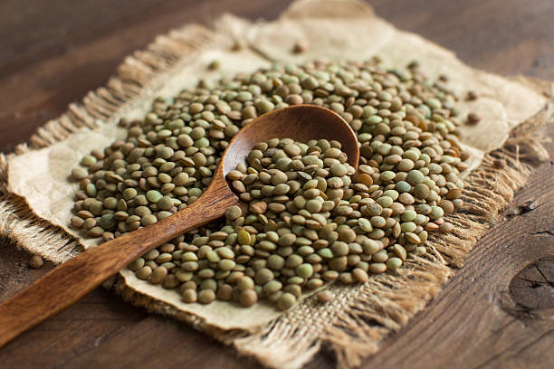

More information about gluten free diet below

This is rice. We love this one.
This is a type of legume. Isn't it nice?
Raisins are dried grapes. They don't contain gluten either.

They're legumes like lentils. They taste good.